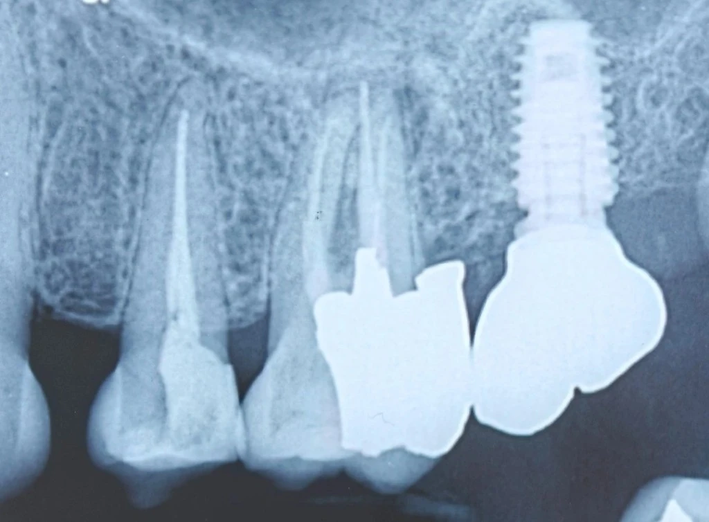

Chairside 28
Vague Pain in an Endodontically Treated Tooth and Periodontist Negligence

The patient came for a second opinion about extracting a premolar; but their other complaint was chronic pain in the adjacent molar. Several radiographic findings appeared at once — inadequate endodontic treatment, a shadow suggestive of furcation involvement, and a clear distal overhang — and the diagnostic task was to identify the true source of the pain.
Presenting Complaint. The patient sought a consultation and second opinion about the second premolar (tooth 5), having previously been told the tooth was non-restorable and needed extraction. During the exam and history, another important complaint emerged: long-standing chronic pain in the region of the first molar (tooth 6).
Clinical evaluation of tooth 5 showed three sound walls remaining, with only the distal wall missing. That missing wall did not prevent an adequate ferrule or preclude saving the tooth; the extraction plan was therefore rejected and the tooth was directed toward preservation and reconstruction. The complaint of pain from tooth 6, however, pushed the visit toward a more precise diagnostic workup.
Clinical and Radiographic Evaluation. On the radiograph, several key findings on tooth 6 stood out: first, a lesion was present and the endodontic treatment was inadequate. Second, an appearance suggestive of furcation involvement was visible. Third, a clearly evident overhang on the distal of the same tooth stood out.
Given that, the patient's chronic pain could have different origins: a flare of the existing endodontic problem, furcation involvement, or inflammation from food impaction around the overhang.
To differentiate these and identify the prime suspect, I first performed a percussion test. Lack of sensitivity of tooth 6 to percussion showed that the patient's current pain was not related to a root problem. Next, I assessed the furcation area with a probe; the probe did not enter, and clinical furcation involvement was ruled out. Finally, running the probe in the overhang area reproduced exactly the pain the patient complained of, confirming that the source was simply local gingival inflammation.
The Core of the Case. Here is the main — and regrettable — part of the story: the colleague who placed the implant at tooth 7 and its crown was a periodontist. The implant crown on 7 was delivered immediately after this restoration and the creation of the overhang.
A periodontist could easily have diagnosed the source of the patient's pain and, before starting new treatment, resolved the adjacent tooth's problem (whether the overhang or the suspicious furcation appearance). Evaluating that area before seating the crown on 7 would have been far simpler. More importantly, if the workup had shown that tooth 6's problem was more serious (for example, a strip perforation), the clinician could readily have changed the entire implant treatment plan before delivering the prosthesis on 7 and designed a more comprehensive plan for that quadrant.
From that point, our diagnostic path and clinical decision-making proceeded as follows:
- Source of pain in tooth 6: periodontal inflammation and chronic tissue irritation from the overhang and food impaction; the existing endodontic problem is not what is producing this particular pain.
- Decision for tooth 6: my primary goal for tooth 6 in this visit was diagnosis alone. I did not decide on an intervention yet, because correcting this overhang in the current situation is very difficult and would likely require removing the adjacent implant crown. Intervening on this tooth also carries heavy responsibility. The tooth has a lesion and inadequate endodontic treatment, and despite no probe catch, it has a suspicious furcation appearance — so it is not a candidate for preparation and a crown at all. It is now the patient who must accept the risk of any intervention, because any treatment may ultimately end in extracting tooth 6 (especially if furcation involvement is present that still lacks clear clinical expression).
- Tooth 5: rejection of the previous recommendation to extract; preserve the tooth and restore/crown it relying on the three remaining walls and an adequate ferrule.
Conclusion and Clinical Tip. When a tooth presents with several concurrent problems, the first goal is to differentiate which factor is producing the pain. An unfavorable radiographic appearance does not necessarily mean it is the source of pain.
️Clinical Tip: before starting any new treatment (especially delivering an implant crown), thorough evaluation of adjacent teeth and correction of their problems (such as overhangs) is mandatory. Ignoring those problems and delivering a prosthesis into an unhealthy environment not only makes later interventions far riskier and harder for other colleagues, it also costs you the chance to change the overall treatment strategy. Never build a new prosthesis on an unevaluated, inflamed adjacent foundation.
The content of this page is intended for the educational use of dentists and dental students.